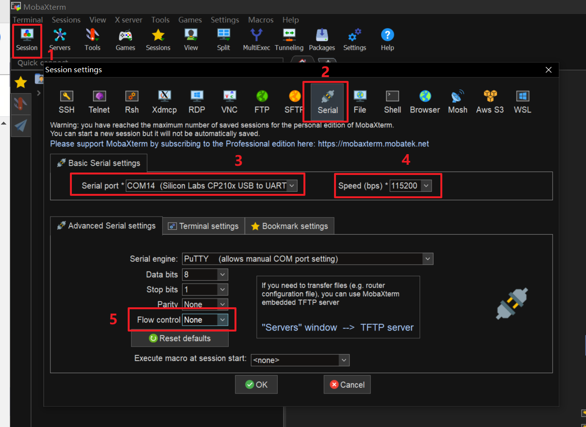

硬件构建 #
此仓库包含用于从 SD 卡启动 Zynq AX7021 FPGA 开发板的预构建硬件和系统 rootfs。
文件下载 #
从这个公共链接下载以下文件：
- BOOT.BIN
- boot.scr
- image.ub
- rootfs.tar.gz
SD 卡分区 #
为了启动 CaaS 交换机，您需要一个大于 32GiB 存储容量的 micro SD 卡。然后使用以下命令：
sudo apt-get install gparted
sudo gparted
将其分为以下两个分区：
-
BOOT：存储来自 petalinux 的启动文件
前置空闲空间（MiB）：4
新大小（MiB）：500
文件系统：fat32
标签：BOOT
-
ROOTFS：存储 debian 系统 rootfs
前置空闲空间（MiB）：0
后置空闲空间（MiB）：0
文件系统：ext4
标签：ROOTFS
复制文件到 SD 卡 #
挂载 SD 卡：
sudo mount /dev/sda1 /media/alinx/BOOT/
sudo mount /dev/sda2 /media/alinx/ROOTFS/
删除原始文件：
sudo rm -rf /media/alinx/BOOT/* /media/alinx/ROOTFS/*
复制文件：
sudo cp BOOT.BIN boot.scr image.ub /media/alinx/BOOT
sudo tar -zxvf rootfs.tar.gz -C /media/alinx/ROOTFS
sudo cp -r ~/init_os.sh /media/alinx/ROOTFS/home/root/init_os.sh
sync
sudo chown root:root /media/alinx/ROOTFS
sudo chmod 755 /media/alinx/ROOTFS
启动交换机 #
1. 启动开发板 #
将 SD 卡插入 FPGA 开发板，将开关切换到 SD 卡启动模式。

2. 初始化 PS #
插入 SD 卡，设置 AX7021 开发板从 SD 启动，打开电源。
将 PC 连接到开发板的 UART 端口。我们推荐使用 MobaXterm 连接串行端口。将速度设置为 115200，流控制设置为 None。

默认用户名和密码如下：
用户名："root"
密码："root"
执行初始化脚本设置 Linux 环境。
sh init_os.sh
您可以自由配置主机名、IP 地址和 MAC 地址等，并可根据需要修改脚本。
3. 连接到互联网 #
将 PC 的网络端口连接到设备的 PS 网络端口（ETH0）。
将 PC 的相应端口设置为与设备在同一子网内（即 192.168.137.x）。
之后，您可以通过 ssh 连接到设备，并复制所需的软件文件。
4. 运行软件 #
请参考此仓库的软件部分了解进一步的说明。